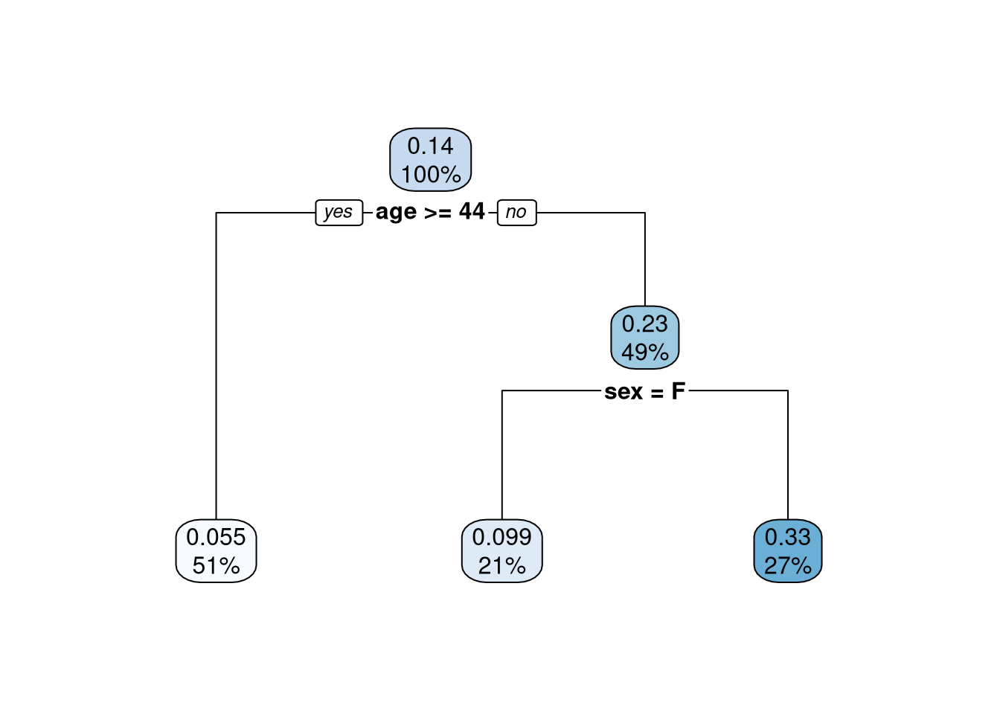
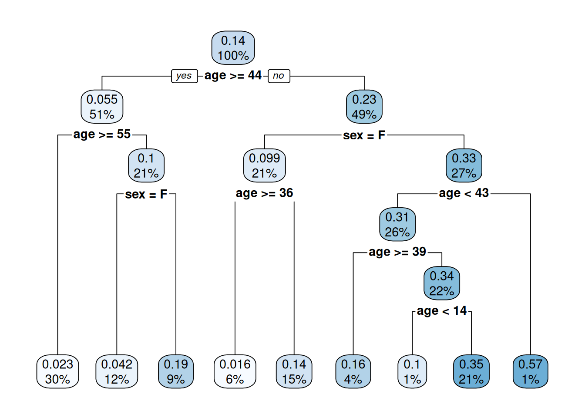
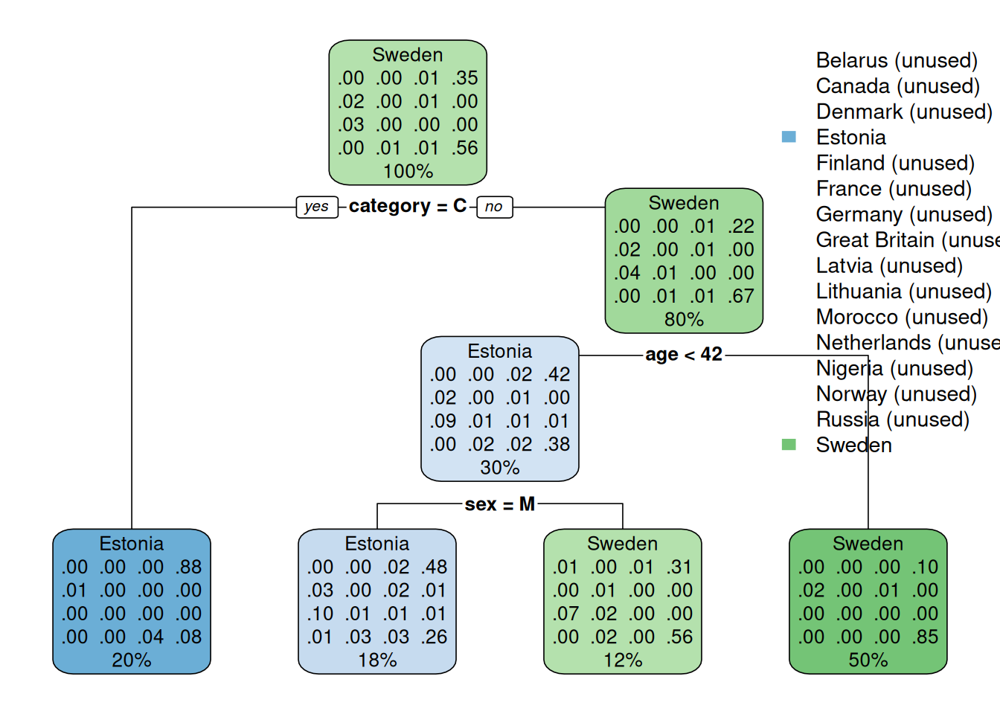

Otsusepuu kujutab endast joonist, mis ilmestab otsuste hargnevust järgmiste otsusteni ja lõpuks mingi tulemuseni. Otsusepuud saab kasutada mitmesuguste otsustuseid hõlmavate probleemide lahendamisel, aga ka vaatluste jaotamiseks andmestikus. Vaatlused saab järk-järgult jaotada sisendtunnuste alusel nii, et ühes jaotuses on ainult sama väljundtunnuse väärtusega vaatlused.
Mõiste
Andmeanalüüsis on otsusepuu (decision tree) statistiline mudel, mis seisneb teatud reeglite hierarhias. Need reeglid määravad, kuidas jõuda väljundtunnuse väärtusteni jagades vaatlusi järk-järgult sisendtunnuste väärtuste alusel.
Sisend- ja väljundtunnused võivad otsusepuul olla kas nimi- või arvtunnused. Nimiskaalal väljundtunnuse korral valitakse sõlmedes üks konkreetne väärtus, arvskaala korral aga vaatluste keskmine väärtus. Seega oleneb otsusepuu poolt lahendatav ülesanne väljundtunnuse skaalast:
nimiskaalal väljundtunnuse korral on tegemist klassifitseerimisega,
arvskaalal väljundtunnuse puhul rakendatakse aga sisuliselt regressiooni.
Otsusepuu koosneb
otsusesõlmedest, milles sisendtunnus jaotab vaatlused kaheks;
harudest sõlmede vahel;
lõppsõlmedest, millega hargnemine lõppeb ja millest igaühes on teatud osa vaatlustest.
Sageli näitlikusatakse otsusepuud 1912. aastal uppunud reisilalaeva Titanic reisijate pääsemise näitel. Vaatame siin analoogset näidet parvlaev Estonia õnnetuse kohta aastal 1994.
estonia <-read.csv('andmed/estoniapassengers.csv')str(estonia)
Otsusepuu saame arvutada funktsiooni rpart() abil samanimelisest laiendusest. Uurime pääsemist (survival), võttes aluseks reisija soo (sex), vanuse (age) ja selle, kas tegemist oli reisija või meeskonnaliikmega (category).
library('rpart')puu <-rpart(survived ~ sex + age + category, estonia)puu
Nagu üleval näha, siis funktsiooni rpart() tulemuse sisestamisel kuvatakse puu liigendatud loeteluna. Sama teabe saab vormistada ilmekamalt joonisena kasutades funktsiooni rpart.plot() sama nimega laiendusest.
library('rpart.plot')rpart.plot(puu)

Joonis 23.1: Lihtne otsusepuu
Sõlmedes on murdarvuna esitatud väljundtunnuse mingi väärtuse tõenäosus. Protsendina on esitatud eelnevas sõlmes olevale tingimusele vastavate või mitte vastavate vaatluste osakaal. Tingimustele vastavad vaatlused hargnevad vasakule ja mitte vastavad vaatlused hargnevad paremale.
Joonisel Joonis 23.1 esitatud näites on algses otsusesõlmes 100% vaatlustest, kellest 0.14 puhul oli tunnuse survived väärtuseks 1 ehk 14% kõikidest pardal olnutest pääsesid. Tingimusele age >= 44 vastavaid ehk vanuses 44 aastat või vanemaid oli pardal 51% ja nendest pääses 0.055 ehk 5,5%. Lõppsõlmede võrdluses kõige suurem pääsemise tõenäosus 33% oli alla 44-aastastel meestel (ei vastanud tingimusele sex = F). Viimased moodustasid pardal olnutest 27%.
Sageli on arvutatud otsusepuu liiga lihtne, mida võib öelda ka eelneva näite kohta. Sellisel juhul saame täpsustada argumendi control abil muuhulgas järgnevaid parameetreid:
väikseim vaatluste arv harus (minsplit);
väikseim vaatluste arv lõppsõlmes (minbucket).
keerukus (cp), mille puhul väiksem arv näitab suuremat keerukust;
puu <-rpart(survived ~ sex + age + category, estonia, control =list(minsplit =20, minbucket =10, cp =0.005))rpart.plot(puu)

Joonis 23.2: Keerukam otsusepuu
Kuna otsusepuu on statistiline mudel, siis saame seda kasutada prognoosimiseks. R keeles saame prognoosida kasutades funktsiooni predict(). Nt 23-aastase naissoost reisija pääsemise tõenäosuse saame leida alljärgnevalt. Kuigi tunnus category prognoosi ei mõjuta nagu näeme jooniselt Joonis 23.2, peame selle siiski täpsustama.
predict(puu, list(sex ='F', age =23, category ='P'))
1
0.1351351
Näeme, et nimetatud tunnustega pardal viibija pääsemise tõenäosus oli umbes 0.14. Sama tulemuse saame tegelikult lugeda ka ilma prognoosimata jooniselt Joonis 23.2.
Saame otsusepuud kasutada ka mitme klassiga nimitunnuse seletamiseks. Käesoleva andmetabeli alusel võiksime kirjeldada nt reisijate päritoluriiki (country).
library('rpart')puu <-rpart(country ~ sex + age + category, estonia)rpart.plot(puu)

Joonis 23.3: Mitut klassi prognoosiv otsusepuu
Mitme klassiga väljundtunnuse korral kuvatakse otsusepuu sõlmedes vastavalt legendis esitatud järjestusele eraldi iga klassi tõenäosus. Sõlme värv vastab kõige suurema tõenäosusega (osakaaluga) klassile ja klassid, mis üheski sõlmes ei domineeri, on legendis märkega “(unused)”. Näeme, et kui pardal viibija oli meeskonnaliige (category = C), siis oli ta 88% juhtudest pärit Eestist. Kui isik ei olnud meeskonnaliige (mitte category = C) ja oli 42-aastane või vanem (mitte age < 42), siis oli ta 85% tõenäosusega pärit Rootsist ja ainult 10% juhtudest Eestist.
Otsusepuu iga hargnemine oleneb sellest, mis sisendtunnus ja millised selle sisendtunnuse väärtused vaatluste jaotamisel aluseks võetakse. Igas sõlmes valitakse selline sisendtunnus ja selle väärtus või lävend, mis jagaksid vaatlused väljundtunnuse väärtuste osas võimalikult selgelt kaheks. Või siis teistipidi, hargnemise tulemusel peaks vähenema andmetes olev entroopia ehk korratus. Eesmärk on jõuda selliste harudeni, milles oleksid võimalikult sarnase väljundtunnuse väärtusega vaatlused. Nt joonisel Joonis 23.1 esitatud otsusepuu alusel võime öelda, et kõige selgemini jaotab reisijad pääsenuteks ja mitte pääsenuteks nende vanus ning lävend on sealjuures 44 eluaastat.
Otsusepuul on palju eeliseid teiste meetodite ees:
otsusepuu on mudelina lihtsasti tõlgendatav ja arusaadav igaühele,
erinevalt paljudest teistest mudelitest ei sea otsusepuu piiranguid kasutavate tunnuste mõõtmisskaalale,
puuduvad väärtused saab enamike algoritmide korral määratleda eraldi tunnuse väärtusena,
erindid on tuvastatavad ega mõjuta ülejäänud mudelit,
interaktsioonid on puu ülesehituses ja neid ei pea eraldi määratlema.
Otsusepuu puuduseks on selle tundlikkus andmetes oleva müra suhtes. See tähendab, et otsusepuu kirjeldab liiga täpselt selle aluseks olevaid andmeid ega sobi seega prognoosimiseks. Seetõttu kasutatakse prognoosimiseks hoopis korraga suurel hulgal juhuslikke otsusepuusid ehk juhumetsa (random forest).